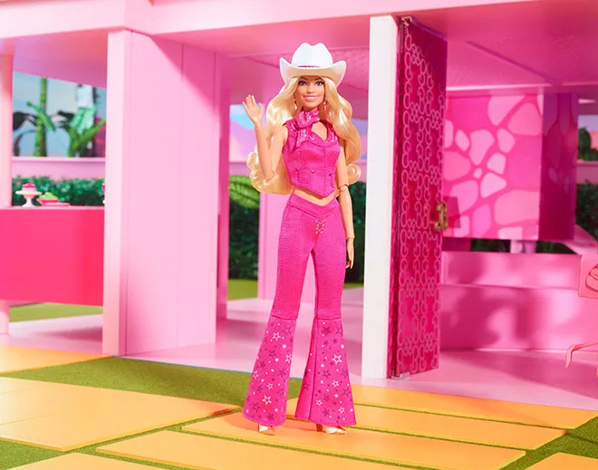

Welcome to the World of Barbie!
Step into the vibrant and dazzling world of the Barbie Movie, where fantasy meets reality in a visually stunning, heartwarming, and empowering adventure. Directed by Greta Gerwig, this film brings Margot Robbie as Barbie and Ryan Gosling as Ken to life in a whimsical journey of self-discovery, humor, and nostalgia.
About the Movie
Barbie has always lived in Barbieland, a perfect pink paradise where everything is flawless—until she starts questioning her reality. Facing existential questions, she ventures into the real world alongside Ken, encountering challenges, surprises, and new perspectives along the way.